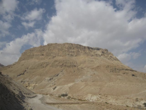
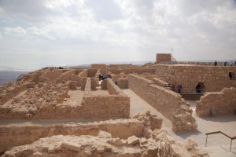
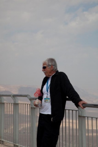
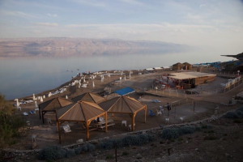
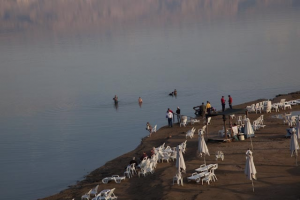
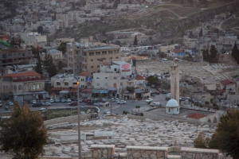
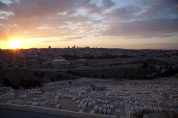

Big Tourist Day
- February 23rd, 2009
- Posted in Chron
- Write comment
Did the tourist big 3 today: Masada, Qumran, and the Dead Sea.
Masada was where 900 or more Jews held out against the Romans in 73AD. On the last night when holding any longer appeared impossible, the Jewish Zealots drew lots for who would kill whom in order, and the last man committed suicide. It is a stirring site and the star of Israeli archaeology. My anthropologist guide points out that the story is very unlikely to be true: skeletal remains of only about 30 people have ever been found despite years of digging. It’s still an impressive site that shows how advanced the Jewish culture of 2000 years ago was.
It’s bizarre to hike up 400 meters (over 1300 feet) and only get back to sea level. Lots of school groups with armed guards. Lots of Uzi’s carried non-chalantly by twenty year olds.
Qumran is where the Dead Sea Scrolls were found. My anthropogist guide specializes in analyzing human remains and ancient feces. He has a convincing account that supports the view that a cult called the Essenes certainly lived at the Qumran site until 60-70AD. It was fun to hear how much the study of poo can teach us about how early people lived (Essenes weren’t very sanitary). It seems that present-day Christians are much more interested in this site than religious Jews. The modern day Christian pilgrims are looking for evidence that links the Old Testament to the New Testament, though there isn’t any in the Dead Sea scrolls. The religious Jews really don’t want to find out that there were more than one version of the Old Testament—it would be confusing.
OK, the Dead Sea “beach” is a pit attracting some of the most unlovely specimens of humanity to don bathing suits. You really can float. Not only can you float on your back, but you can float feet down/straight up with your chest, shoulders and head above the water. This is acrid water—you can sort of tolerate getting a taste of sea water when you lick your lips when you swim in the ocean. But, the Dead Sea tastes like you are in some kind of chemical bath. I can’t tell if my skin is more vibrant now, but it was very refreshing after the hot hike up Masada. The other cool thing is even with the sun beating down you can’t get sunburnt. The atmosphere is so thick at this low elevation below sea level that most UV rays are cut.
Continue to see some pictures…
|  | The summit of Masada: about 1M above sea level, but 400M above the Dead Sea. |
|  | Restored walls on the summit of Masada, part of King Herod’s castle and defensive fortification built circa 30 BCE. |
|  | Joe Zias, curmudgeonly guide, who delights in bursting archaeologically based bubbles, especially bubbles dear to dogmatic religious types. |
|  | The beach at the Dead Sea, very popular with largish Russians and Germans. Hills of Jordan in the background beyond the Dead Sea. |
|  | Swimmers or should I say “floaters.” In addition to amazing floating, it appears to be popular to smear yourself with thick green mud from the bottom. I didn’t try that; I don’t like “treatments.” |
|  | View of East Jerusalem (Palestinian) from the Mount of Olives. |
|  | Sunset over Jerusalem with Dome of the Rock and Al Aqsa Mosque visible. |
{kind=link}
{kind=link}
{kind=link}
{kind=link}
{kind=link}
{kind=link}
{kind=link}
great info. glad to know that poo will be useful for future generations.
Great comment on the swimsuits; this is the place where an 8 year old Daniel once asked, “Daddy, how come Israeli men are so fat and wear those little swimsuits?”
Wasn’t the Massada water cistern system amazing?
Sounds like you have a great guide who’s general outlook on the situation is close to yours too.
Hey Lewis!
It’s Jay, Susie, Emmy, and the best one of all, Ellie.
We miss you a lot and you’re pictures are ‘ballin’ (real gangsta… chea bro)
Mom would like to say she loved the dead sea and we all think that your next picture should be you covered in mud.
WE LOVE YOU AND MISS YOU A LOT.
Love, US!
PS – Ellie got you a hilarious gift from Mexico. She thinks you will love it, because, if you don’t she will kill you.
PPS- Jay is excited for when you return because he really wants to run the remote controlled cars with you.
WE LOVE YOUUU.
Just a couple of other notes on Masada:
Actually, something like 26 human skeletal remains have been found: far too few to support the mythology of the mass suicide to avoid Roman slavery. Also, the most significant skeletons that were later given a full Israeli military burial were found with pig bones amongst the human bones. So, the humans were probably Roman soldiers not Jewish zealots. Let’s just say a lot of the military mythology of Masada has been tarnished. Also, nearly full head of hair found in one of the graves is unlikely to be the hair of a female Jewish martyr. If it were, the hair ends would have roots. But, the hair appears to have been sheered off–there were no roots. So, this is probably the hair of a female captive.